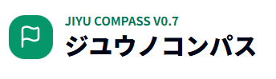
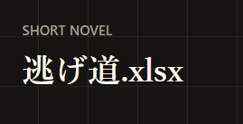

ミッション診断ツール
ジユウノコンパス
貯金がうまくできない人も、毎月ギリギリの人も、働く時間を少し減らしたい人も。まずは今できる一歩から、生活を整えるミッション診断ツールです。
Works, notes, and everyday records
じゅん
会社員の生活、身軽に暮らすこと、逃げ道を持つこと。考えたこと、作ったもの、日々の記録を置いています。
作品を見るWorks

ミッション診断ツール
貯金がうまくできない人も、毎月ギリギリの人も、働く時間を少し減らしたい人も。まずは今できる一歩から、生活を整えるミッション診断ツールです。

短編分岐ノベルゲーム
会社員が月曜の朝から逃げ道を探す物語。生活費、仕事、つながり、自由までの距離を読み進めます。
Links